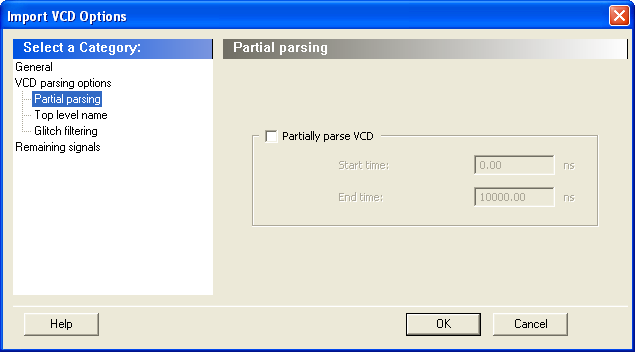

12.2 SmartPower Interface
(Ask a Question)The following sections describe the SmartPower tabs, toolbars, and menu commands.
12.2.1 Summary Tab
(Ask a Question)- Power Consumption
- Breakdown
- Annotation Coverage
- Operating Conditions
- Battery

12.2.1.1 Power Consumption
(Ask a Question)Displays the total power consumption and the static and dynamic power of the design. The information displayed is accurate after you enter your target clock and data frequencies.
12.2.1.2 Breakdown
(Ask a Question)Displays a breakdown of power consumption in the design. A drop-down list allows you to view the power breakdown by type of component, voltage rail, or clock domain.
12.2.1.2.1 Show
(Ask a Question)Displays power usage as a chart or as a grid.
When you select By Type from the drop-down list, the Summary tab displays a breakdown of the design's power usage by the following types:
- Net
- Gate
- I/O
- Memory
- Core Static
- Banks Static
- Analog (for Fusion Designs)
Any static power used by instances of a component in a design will be included in the appropriate category. As a result, the sum of the power in breakdown by type will be equal to the total static and dynamic power consumption of the design. Percentages displayed are fractions of the total power. Global nets are included in the net power types. To obtain the power of a clock, select breakdown by clock domain.
When you select By Rail from the drop-down list, the Summary tab displays a breakdown of the power usage by the rail that the power is drawn from and a breakdown for the current usage. The power, voltage, and current drawn for each rail are displayed.
When you select By Clock Domain from the drop-down list, the Summary tab displays a breakdown of the power usage by the clock domain that the power is drawn from. For each clock domain, the power and percentage of power drawn are displayed. Dynamic power is accounted for in breakdown by clock, but static power is not associated with any clock.
By Mode is available only when a scenario is selected. When you select By Mode in the Modes and Scenarios toolbar, the Summary tab shows power consumption, duration, and power duration weight by mode.
After you select By Type, By Rail, By Mode, or By Clock Domain, you can customize the columns in the grid by right-clicking the column headers. To exclude a column, remove its check mark from the right-click menu. Right-click a column header to set the column default size for the selected column or for all columns, and then sort the values in ascending order, descending order, or customize the columns.
To sort the contents of a column, double-click a column header.
To export the contents of the grid to a file, from the File menu, choose Export Grid or click its associated toolbar button.
To print the grid, from the File menu, choose Print Grid or click its associated toolbar button. To copy the grid, from the Edit menu, choose Copy Grid or click its toolbar button.
To copy the chart, click the contents of the chart, and from the right-click menu, choose Copy Chart to Clipboard.
To export the chart, click the contents of the chart, and from the right-click menu, choose Export Chart to File.
To rotate the chart by 90 degrees, click the contents of the chart, and from the right-click menu, choose Rotate Chart Clockwise or Rotate Chart Counter-Clockwise.
12.2.1.3 Annotation Coverage
(Ask a Question)- Hide annotation coverage link: hides the annotation coverage.
- Show annotation coverage link: shows the annotation coverage.
- Annotation Coverage Summary drop-down menu: shows probability or frequency annotation statistics (frequency=0 shows statistics for pins that have a frequency of 0).
- VCD: shows the number/percentage of pins with frequencies/probabilities imported from a VCD file.
- Manual annotation: shows the percentage of pins with manually annotated frequencies/probabilities.
- SmartTime constraint: shows the percentage of pins initialized with SmartTime.
- Fixed values: shows the percentage of pins with default frequency/probability.
- Vectorless estimation: shows the percentage of pins that have been annotated with vectorless estimation.
12.2.1.4 Operating Conditions
(Ask a Question)Displays the temperature and voltage operating conditions for the selected mode or scenario specified in the Operating Conditions dialog box. When you select a scenario, the temperature and voltage operating conditions for each mode in the scenario are displayed.
To change the operating conditions, click the Change Operating Conditions link or from the Tools menu, and then choose Operating Conditions.
12.2.1.4.1 Battery
(Ask a Question)Allows you to set the battery capacity in mA/hr and reports the battery life.
12.2.2 Domains Tab
(Ask a Question)The Domains tab lists existing domains along with their corresponding clock and data frequencies and probability data for clock domains and sets of pins. In this tab, you can add, edit, or remove domains or sets of pins, and change the clock and/or data frequency for a selected domain.
When you start SmartPower for the first time, it automatically initializes frequencies from SmartTime with a default data toggle rate of 10%. However, if you update your timing constraints in SmartTime, you can use the Initialize Frequencies and Probabilities dialog box to update SmartPower with new frequencies from SmartTime. If you do not have timing constraints in SmartTime, you can initialize clock and data frequencies manually by directly editing the Domains tab grid or using the Initialize Frequencies and Probabilities dialog box.
If you import a VCD file, the Domains tab shows the average clock and data frequencies for each clock domain and input set. This average is calculated using VCD information.
To hide or display the grid for set of pins, click the Hide/Show set of pins link. You can edit frequency or probability data directly from the grid.
To create a new clock domain or set of pins:
- Right-click the clock domain or set of pins and choose create new clock domain or create new set of pins.
- Enter a name and click OK. The new clock domain or set of pins appears in the Domains tab.
- Modify the frequency and probability data as needed.
To initialize, clock domain frequencies, right-click the clock domain name and select Initialize Frequencies and Probabilities. If there is no frequency constraint set for the clock domain in SmartTime, the clock frequency of the domain is not changed.
The status of a clock frequency or probability is displayed in the first column by an icon. Mouse over the icon to identify the status (see the following table).
| Icon | Description |
|---|---|
| This clock has not been initialized. | |
| No constraints available for this clock from SmartTime. | |
| Average frequencies/probabilities imported from VCD. | |
| Clock constraints imported from SmartTime. | |
| This clock has been initialized manually. |
An icon in the first column shows the status of a set of pins. Mouse over the icon to identify the status (see the following table).
| Icon | Description |
|---|---|
| This set has not been initialized. | |
| Average frequencies/probabilities imported from VCD. | |
| This set has been manually initialized |
To remove one or multiple clock domains, select the clock domain(s) and click Remove Selected Domains(s).
To edit a clock domain or a set of pins:
- Select the clock domain and from the right-click
menu, and choose Edit Domain. The Clock Domain or Set-of- Pins window appears.
Figure 12-5. Clock Domain Window Any pins that do not belong to a domain appear under Unclassified Pins. You can select a pin from this list and add it to the current domain. You can also select a pin from the current domain and remove it from the domain (this pin will appear under Unclassified Pins).
Clock Pins and Data Pins: Select Clock Pins from the pull-down list to display all clock pins for the selected domain, or select Data Pins to display registers, asynchronous signals, primary input, and combinational signals for the selected domain.
Use the filter boxes to narrow your search for a specific pin. The boxes are text filters; * is a wildcard.
- Click OK.
To delete a clock domain or a set-of-pins, select the clock domain or set-of-pins and choose Remove Domain from the right-click menu.
12.2.3 Analysis Tab
(Ask a Question)- Hierarchy of Instances window
- Analysis window
12.2.3.1 Hierarchy of Instances Window
(Ask a Question)SmartPower lists the hierarchy of instances in the Hierarchy of Instances window. Clicking the plus sign (+) next to a block expands the block to show its sub-blocks. Only hierarchical blocks are displayed in this list (no gates or nets).
When you select a block of the hierarchical tree, SmartPower displays its name and power consumption in the Analysis window.
12.2.3.2 Analysis Window
(Ask a Question)- Power Consumption
- Breakdown
12.2.3.2.1 Power Consumption
(Ask a Question)Displays the name of the currently selected block from the hierarchy of instances window, as well as the static and dynamic power consumption of the selected block.
12.2.3.2.2 Breakdown
(Ask a Question)Displays a breakdown of power usage of the currently selected block. Use the drop-down list to view the power breakdown by type of component (instance, or clock domain).
When you select By Type from the drop-down list, the Analysis tab shows a breakdown of the selected block's power usage by the following types:
- Net
- Gate
- I/O
- Memory
- Core Static
- Banks Static
- Analog
Any static power used by instances of a component in a design are included in the appropriate category.
The sum of the power in breakdown by type equals the total static and dynamic power consumption of the design. Percentages displayed are fractions of the total power. Global nets are included in the net power types. To obtain the power of a clock, select breakdown by clock domain.
When you select By Clock Domain from the drop-down list, the Analysis tab shows a breakdown of the power usage by the clock domain that the power is drawn from. For each clock domain, the power and percentage of power drawn are displayed. Dynamic power is accounted for in breakdown by clock, but static power is not associated by any clock.
When you select By Type, By Instance or By Clock Domain, you can customize which columns are displayed in the grid by right-clicking the column headers. To exclude a column, remove its check mark from the right-click menu. Right-click a column header to set the column default size for the selected column or for all columns, and then sort the values in ascending order, descending order, or customize the columns.
To sort the contents of a column, double-click a column header.
To export the contents of the grid to a file, choose Export Grid from the File menu, or click its associated toolbar button.
To print the grid, choose Print Grid from the File menu, or click its associated toolbar button. To copy the grid, choose Copy Grid from the Edit menu or click its toolbar button.
To copy the chart, right-click the contents of the chart and choose Copy Chart to Clipboard.
To export the chart, right-click the contents of the chart and choose Export Chart to File.
To rotate the chart by 90 degrees, click the contents of the chart and choose Rotate Chart Clockwise or right-click Rotate Chart Counter-Clockwise.
The Instance Properties window allows you to access a list of pins of a gate, and check their domain and frequency.
12.2.3.2.2.1 Show
(Ask a Question)Displays power usage as a chart or grid.
12.2.4 Frequencies Tab
(Ask a Question)Use the Frequencies tab to attach switching frequency attributes to the interconnects of the design.
- Switching Frequencies
- Average Frequencies
- Annotation Statistics

12.2.4.1 Switching Frequencies
(Ask a Question)Displays the pins and lists the net, domain, frequency, and frequency source for each pin.
The Driver box allows you to filter the list of pins based on the criteria entered. Enter text in the filter box and click Set to apply this text as a filter. Use the * character to display all pins or as a wildcard.
Use the Domain drop-down list to select a different domain (All, CLKIN, Default, or Input to Output).
Use the Source drop-down list to select a different source (All, Default, Manual Annotation, or VCD Import).
To change the frequency, enter a new value in the Frequency column, or select multiple pins, click the Set frequencies for selected pins button, and enter a new frequency. Use Reset frequencies for selected pins to revert to the default frequency.
To select all the pins, click Select All.
12.2.4.2 Average Frequencies
(Ask a Question)Displays the average frequency of all pins displayed in the grid.
Average frequencies are useful when you import a VCD file. Because these files allow you to specify the frequency of each pin individually, it is useful to know the average clock pin or data pin frequency for a particular clock domain.
If you did not specify a frequency annotation for any clock pin in this clock domain, the average value is equal to the default clock frequency of the clock domain. If you set one or several clock pins, SmartPower takes those annotations to compute an average value.
If you did not specify a frequency annotation for any data pin in this clock domain, the average value is equal to the default data frequency of the clock domain. If you set one or several data pins, SmartPower considers these annotations into account to compute an average value.
12.2.4.3 Annotation Statistics
(Ask a Question)VCD import: displays the percentage of pins with frequencies imported from the *.vcd file.
Manual annotation: displays the percentage of pins with manually-annotated frequencies.
Fixed values: displays the percentage of pins with default frequency.
12.2.5 Probabilities Tab
(Ask a Question)- Bidirectional and Tristate I/Os: controls the output probability of each tristate and bidirectional I/O. The probability is the percentage of time that the I/O is used as an output. You can change the default value and set a specific value for each bidirectional or tristate I/O.
-
Memories: controls the read cycle probability or the write cycle probability of a memory block. The probability is the percentage of time that a memory block will be used in a read cycle or a write cycle. You can change the default value and set a specific value for each enable pin of each memory block available in the design. If an enable pin is active low, assign it a probability of 0% to completely enable the I/O or the memory block, or 100% to disable it completely.
- For purely vertical cascading, enable the pins that belong to one RAM block.
- For purely horizontal cascading, enable all pins belonging to all RAM blocks of the cascaded memory.
The Driver box allows you to filter the list of drivers based on the criteria entered. Enter text in the filter box, and click Set to apply this text as a filter. Use the * character as a wildcard.
Use the Type drop-down list to filter the pin list by different type (All, All enable, CLKIN, Default, or Input to Output).
Use the Polarity drop-down list to filter the pin list by polarity (Low, High, or All).
Use the Source drop-down list to filter the pin list by source (All, Default Estimation, Manual Annotation, SDC, VCD Import).
Use Reset Probabilities for selected pins to revert to the default polarity. You can change the default probability from the Domains tab.
To select all the drivers, click Select All.
You can set or reset the probabilities, set a default probability, copy, export, or print the grid by selecting one or multiple pins and choosing an option from the right-click menu.
12.2.6 Preferences Toolbar
(Ask a Question)- Operating Conditions:
allows you to set the operating conditions: Best, Typical, or Worst. The actual
voltage and temperature of a given operating condition is defined by the
operating condition range selected for the current design (COM, IND, MIL, Auto,
TGrade1, TGrade2, and Custom). For SmartPower, unlike SmartTime, the worst
voltage is the upper bound of the range. That is, higher (worst-case) power
comes from higher voltage, while higher voltage results in best-case speed.Note: Worst-case and best-case calculations are available only for certain families and devices.
- Frequency Preferences: sets unit preferences for frequency: Hz, KHz, MHz.
- Power Preferences: sets unit preferences for power: W, mW, or uW.
12.2.7 Modes and Scenarios Toolbar
(Ask a Question)The Modes and Scenarios toolbar appears as the left pane in the SmartPower interface. It displays all predefined modes, custom modes, predefined scenarios, and custom scenarios.
The Modes and Scenarios toolbar is shown by default, but can be closed or undocked. To view the toolbar, choose Modes and Scenarios toolbar from the View menu.
From this toolbar, you can:
- Select a predefined mode by clicking the mode name.
- Select a custom mode by clicking the mode name.
- Select a custom mode for power-driven layout by right-clicking the active-based mode and selecting Use for PDPR.
- Re-import a VCD file from an Active mode or a custom mode by right-clicking the VCD file and selecting Re- import VCD File.
- Remove a VCD file from an Active mode or a custom mode by right-clicking the VCD file and selecting Remove VCD File from <mode name> Mode or by choosing Remove VCD File <file name> from the Simulation menu.
- Generate an Activity and Hazards Power report by right-clicking the VCD file and selecting Activity and Hazards Power Report
- Create a new custom mode by clicking Custom modes and selecting New Custom Mode, or by clicking the New Custom Mode hyperlink.
- Edit and delete a custom mode by right-clicking the mode name and selecting Edit custom mode or Delete custom mode.
- Copy a custom or predefined mode by right-clicking the mode name and selecting Create a copy of this mode.
- Select a scenario by clicking the scenario name.
- Create a new custom scenario by clicking Scenarios and selecting New custom scenario.
- Edit and delete a custom scenario by right-clicking the scenario name and selecting Edit custom scenario.
- Copy a scenario by right-clicking the
scenario name and selecting Create a copy of this scenario.Note: When a scenario is selected, only the Summary tab is available.
12.2.8 SmartPower Standard Toolbar and Menu Commands
(Ask a Question)The SmartPower standard toolbar contains commands for performing common SmartPower operations on your designs. Roll the mouse pointer over the toolbar button to view a description of the button. Click the button to access the command.
| Toolbar Button | Description |
|---|---|
| Commit | |
| Settings Summary | |
|
|
Operating Conditions |
|
|
Options |
| Export Path Grid | |
| Copy Path Grid | |
| Print Grid | |
| Generate Power Report | |
| Initialize Frequencies and Probabilities | |
| Refresh vectorless estimation | |
| Freeze/Unfreeze Calculations |
The PC and UNIX workstation versions of SmartPower have the same menus. However, some dialog boxes, field locations and names, and buttons may look slightly different on the two platforms due to the different window environments.
12.2.9 File Menu
(Ask a Question)| Menu | Description |
|---|---|
| Commit | Commits power information. You must commit your changes if you wish to save your settings in SmartPower. If you commit your changes, the information is stored in the .adb file, and your settings are restored the next time you open your design in SmartPower. |
| Export Grid | Exports the selected area of the Report window to a text (.txt) file. |
| Print Grid | Prints the selected area of the Report window. |
| Settings Summary | Displays a summary of the power settings for the current design. |
| Close | Closes SmartPower. |
12.2.10 Edit Menu
(Ask a Question)| Menu | Sub-Menu | Description |
|---|---|---|
| Domains | New Clock Domain | Adds a clock domain. |
| New Set of Pins | Adds a set of pins. | |
Delete Domain | Deletes a clock domain. | |
| Edit Domain | Edits a clock domain. | |
| Modes and Scenarios | Use for Analysis > mode or scenario name | Sets the selected mode or scenario to be used for analysis. |
| Use for PDPR > mode or scenario name | Sets the selected mode or scenario to be used for a power-driven layout. | |
| Custom Modes > New Custom Mode | Creates a new custom mode. | |
| Custom Modes > Edit Custom Mode | Edits a custom mode. | |
| Custom Modes > Delete Custom Mode | Deletes a custom mode. | |
| Custom Scenarios > New Scenario | Creates a new custom scenario. | |
| Custom Scenarios > Edit Scenario | Edits a custom scenario. | |
| Custom Scenarios > Delete Scenario | Deletes a custom scenario. | |
| Copy Grid | — | Copies the selected cells of the dynamic grid onto the Clipboard. |
12.2.11 View Menu
(Ask a Question)| Menu | Description |
|---|---|
| Standard Toolbar | Displays or hides the Standard toolbar. |
| Preferences Toolbar | Displays or hides the Preferences toolbar. |
| Modes and Scenarios Toolbar | Displays or hides the Modes and Scenarios toolbar. |
| Unprocessed Simulation Files Toolbar | Displays or hides the Unprocessed Simulation Files toolbar. |
| Customize Columns | Selects and orders the columns displayed in the user interface. |
| Reset Window Layout | Resets the window layout to the default layout. |
12.2.12 Tools Menu
(Ask a Question)| Menu | Sub-Menu | Description |
|---|---|---|
| Initialize Frequencies and Probabilities | — | Imports clock constraints from SmartTime, and allows you to enter frequencies and probabilities for the design, as shown in the Initializing Frequencies and Probabilities section. |
| Operating Conditions | — | Allows you to customize the operating conditions used in SmartPower. |
| Options | — | Displays the Options dialog box, where you can set analysis and display preferences. |
| Reports | Power Report | Generates a power report. |
| Scenario Power Report | Generates a scenario power report. | |
| Activity and Hazards Power Report | Generates an activity and hazards power report. | |
Export Report for MPE | — | Exports a report for Microchip Power Estimator (MPE). |
Freeze/Unfreeze Calculations | — | Freezes or unfreezes the computations that happen to avoid the SmartPower tool from slowing down |
12.2.13 Simulation Menu
(Ask a Question)| Menu | Description |
|---|---|
| Import VCD File | Displays the Import VCD Options dialog box. |
| Remove VCD file | Removes the selected VCD file from the design. |
| Audit files | Audits simulation files within the project. |
12.2.14 Help Menu
(Ask a Question)| Menu | Description |
|---|---|
| Help on current tab | Displays the help content for the current tab. |
| Help Topics | Opens the help files for SmartPower. |
| SmartPower User's Guide | Displays the SmartPower User's Guide. |
| Data Change History | Displays the data change history report. |
For more information, see the SmartPower Preferences Toolbar.
12.2.15 Power-Settings Summary
(Ask a Question)| Attribute | Description |
|---|---|
| Data Source | Displays the data source. |
| Design | Displays the name of the design. |
| Family | Displays the device family used in the design. |
| Die | Displays the die. |
| Package | Displays the package. |
| Temperature Range | Displays the temperature range. |
| Voltage Range | Displays the core supply voltage. |
| Operating Condition | Displays the operating conditions that SmartPower uses to calculate static and dynamic power contributions. |
| Operating Mode | Displays the operating mode that SmartPower uses to calculate static and dynamic power contributions. |
12.2.16 Initializing Frequencies and Probabilities
(Ask a Question)The Initialize Frequencies and Probabilities dialog box allows you to initialize the frequencies and probabilities for your design.
- General
- Clocks
- Register Outputs
- Set/Reset Nets
- Primary
- Inputs
- Combinational Outputs
- Enables Sets of Pins
- Other Sets of Pins
12.2.16.1 General
(Ask a Question)Initialize mode: select an active-based mode for which you want to initialize the frequencies and probabilities. For pins that have not been annotated, SmartPower can estimate their frequency and probability using vectorless analysis or fixed values:
- Use vectorless analysis: SmartPower initializes frequencies and probabilities with vectorless analysis.
- Use fixed values: SmartPower initializes frequencies and probabilities (%) of all registers with a default toggle rate (when using toggle rates), frequency, and probability.
- Remove Simulation file (VCD) if any: removes the simulation file for the selected mode.
- Remove any manual annotations: removes all manual pin annotations for the selected mode.
12.2.16.2 Clocks
(Ask a Question)- Initialize clock frequencies
and duty cycles: initializes clock frequencies and duty cycles with one
of the following:
- with clock constraint if available in SmartTime: when only this box is checked, SmartPower initializes all clock domains in SmartPower with clock constraints from SmartTime. If there is no frequency constraint set for this clock domain in SmartTime, the clock frequency of the domain will not be updated.
- else, with default frequency (MHz) and duty cycle (%): when only this box is checked, SmartPower initializes all clock domains in SmartPower with the specified default frequency and duty cycle.
12.2.16.3 Register Outputs
(Ask a Question)
Initialize frequencies and probabilities: initializes frequencies and probabilities for register outputs in your design.
with Vectorless analysis: SmartPower initializes frequencies and probabilities using vectorless analysis.
with fixed values: SmartPower initializes frequencies and probabilities (%) of all register outputs with a default toggle rate (available only when using toggle rates) or frequency (when not using toggle rates), and a default probability.
12.2.16.4 Set/Reset Nets
(Ask a Question)Initialize frequencies and probabilities: initializes frequencies and probabilities for set/reset nets in your design.
with fixed frequency (MHz): SmartPower initializes all primary inputs in SmartPower with the specified fixed frequency. This option is available only when not using toggle rates.
with fixed toggle rate (%): SmartPower initializes frequencies and probabilities of all set/reset nets with the specified fixed toggle rate. This option is available only when using toggle rates.
with fixed probability (%): SmartPower initializes probabilities of all set/reset nets with the specified fixed probability.
12.2.16.5 Primary Inputs
(Ask a Question)Initialize frequencies and probabilities: initializes frequencies and probabilities for the primary inputs in your design.
with fixed toggle rate (%): SmartPower initializes frequencies and probabilities of all primary inputs with the specified fixed toggle rate. This option is available only when using toggle rates.
with fixed frequency (MHz): SmartPower initializes all primary inputs in SmartPower with the specified default frequency. This option is available only when not using toggle rates.
with fixed probability (%): SmartPower initializes probabilities of all primary inputs with the specified fixed probability.
12.2.16.6 Combinational Outputs
(Ask a Question)Initialize frequencies and probabilities: initializes frequencies and probabilities for the combinational outputs in your design.
with Vectorless analysis: SmartPower initializes frequencies and probabilities with vectorless analysis.
with fixed values: SmartPower initializes frequencies and probabilities (%) of all combinational outputs with a default toggle rate (available only when using toggle rates) or frequency (when not using toggle rates), and a default probability.
12.2.16.6.1 Enables
(Ask a Question)Initialize frequencies and probabilities: initializes frequencies and probabilities for the enable sets of pins in your design.
with Vectorless analysis: SmartPower initializes frequencies and probabilities with vectorless analysis.
with fixed values: SmartPower initializes frequencies and probabilities of all enables sets of pins with the specified default probability and frequency.
12.2.16.6.2 Others
(Ask a Question)Initialize frequencies and probabilities: initializes frequencies and probabilities for the other sets of pins in your design with default values.
with Vectorless analysis: SmartPower initializes frequencies and probabilities with vectorless analysis as specified in the primary inputs frequency and probability.
with fixed values: SmartPower initializes frequencies and probabilities (%) of all other sets of pins with a default frequency and probability.
12.2.17 Operating Conditions
(Ask a Question)The General panel allows you to select the operating condition you want to apply to SmartPower: Best, Typical, or Worst.
The process settings panel allows you to select the process characteristic.
You can customize temperature settings in the Temperature Settings panel, and the voltage settings in the Voltage Settings panels—each VCC voltage used in the design appears under Voltage settings.
Select one of three options to specify the temperature or voltage settings:
- Design operating range (default): sets the temperature or voltage operating range as specified in your Project Settings.
- Custom operating range: sets the temperature (junction or ambient) or voltage operating range for the current design in SmartPower only. Enter temperature values in degrees Celsius and voltage values in volts for Best, Typical, and Worst.
- Mode by mode operating range: sets the temperature (junction or ambient) or voltage for each mode in SmartPower only. Use the grid to enter temperature values in degrees Celsius and voltage values in volts for each mode, or select multiple modes in the grid, and click the Set values for selected modes button to enter the same values for all selected modes.

The junction temperature and static power are computed iteratively until they converge. The formulas are:
If the computed junction temperature is outside the operating condition range (smaller than the best case value or greater than the worst case value), a violation warning will be reported.
Both TJ and Pstatic is re-computed when any of the following parameters are changed:
- Ambient temperature
- Cooling style
- Custom thermal resistance or any parameters/options that affect the static or dynamic power values:
- Junction Temperature Display Mode
- Operating Condition (Affect dynamic power)
- Operating Mode (Affect dynamic power)
- Any of the clock domain frequencies (Affect dynamic power)
If you specified the Ambient temperature in the Temperature Settings panel, you can select the thermal characteristic for θJA.
The thermal resistance is predefined for Still Air, 300 ft/min and Case Cooling. To enter a custom thermal resistance, select Custom from the thermal characteristic for θJA
SmartPower also reports the thermal resistance θJA.
12.2.17.1 Custom Operating Modes
(Ask a Question)SmartPower allows you to use predefined and custom operating modes. A predefined operating mode is an inherent mode of a family of devices that comes with a number of hard availability constraints on the FPGA resources. Custom operating modes are user-defined modes based on one of the predefined modes available for the family, where parameters such as clock, data, and toggle rate frequencies have been customized. A custom mode can also be linked to a VCD.
Custom modes can be used:
- To define additional modes where the chip is in the active predefined mode, but where the clock frequencies or the toggle rates are scaled up or down.
- To import multiple VCD files that capture individual steps that take place in different modes.
- To define a sequence of modes with a duration for each mode and get an estimate of the overall power consumption, from which extrapolate the battery life for the application. The Scenario Power report allows you to define a sequence of modes and estimate the weighted average of the power consumption of the chip over the entire sequence.
- To define additional modes where the chip is in a predefined mode, but the junction/ambient temperature or the rails' voltage modes are different.
12.2.17.1.1 Setting the Current Mode
(Ask a Question)-
From the Edit menu in SmartPower, choose Modes and Scenarios > Use
for Analysis > mode name or select the mode in the Modes and
Scenarios toolbar.
Enter the result of your step here (optional).
12.2.17.1.2 Creating a New Custom Mode
(Ask a Question)-
From the Edit menu in SmartPower, choose Modes and Scenarios >
Custom Modes > New Custom Mode or click Custom Modes in the
Modes and Scenarios toolbar, and select New custom mode.
The New Custom Mode dialog box appears.
Figure 12-27. New Custom Mode Dialog Box - Enter the mode name, select the base mode, and enter comments that describe the mode. The base mode can be either a user-defined custom mode or the active mode. The new mode will inherit all clock and data frequencies and annotations of its base mode.
- Click OK. The newly created operating mode is set as default in the Modes and Scenarios toolbar.
12.2.17.1.3 Editing a Custom Mode
(Ask a Question)-
From the Edit menu in SmartPower, choose Modes and Scenarios >
Custom Modes > Edit Custom Mode, or right-click the mode in the Modes
and Scenarios toolbar and select Edit custom mode.
The Edit Custom Mode dialog box appears.
Figure 12-28. Edit Custom Mode Dialog Box - Edit the mode name and comments.
-
Click OK.
Note: You can only use the Edit Mode dialog box to edit the name and comment of the current mode. To edit the mode properties, such as clock and data frequencies, use the SmartPower tabs.
12.2.17.1.4 Copying a Custom Mode
(Ask a Question)-
Right-click the mode in the Modes and Scenarios toolbar and choose Create a
copy of this mode.
The New Custom Mode dialog box appears.
Figure 12-29. New Custom Mode Dialog Box - Edit the mode name and comments.
- Click OK.
12.2.17.1.5 Deleting a Custom Mode
(Ask a Question)-
From the Edit menu in SmartPower, choose Modes and Scenarios >
Custom Modes > Delete Custom Mode; or right-click the mode in the
Modes and Scenarios toolbar, and select Delete Mode. This brings up the
Delete Custom Mode dialog box.
The Delete Custom Mode appears.
Figure 12-30. Delete Custom Mode Dialog Box -
Select the mode from the pull down and click OK.
Note: You can delete only custom operating modes. You cannot delete predefined modes.
12.2.18 Scenarios
(Ask a Question)12.2.18.1 Creating a New Custom Scenario
(Ask a Question)- From the Edit menu in SmartPower, choose Modes and Scenarios > Custom Scenarios > New Custom Scenario; or click Scenarios in the Modes and Scenarios toolbar, and select New custom scenario.
- Enter the scenario name, enter a duration (total duration for the sequence must equal to 100%) and select previously defined operating modes for this sequence.
-
Click OK.
The newly created scenario is set as default in the Modes and Scenarios toolbar.
12.2.18.2 Editing a Custom Scenario
(Ask a Question)-
From the Edit menu in SmartPower, choose Modes and Scenarios >
Custom Scenarios > Edit Custom Scenario; or right-click the scenario
in the Modes and Scenarios toolbar, and select Edit custom
scenario.
The Edit Custom Scenario dialog box appears.
Figure 12-31. Edit Custom Scenario Dialog Box - Edit the information.
- Click OK.
12.2.18.3 Copying a Scenario
(Ask a Question)-
Right-click the scenario in the Modes and Scenarios toolbar, and select
Create a copy of this scenario.
The New Custom Scenario dialog box appears.
Figure 12-32. New Custom Scenario Dialog Box - Edit the information.
- Click OK.
12.2.18.4 Deleting a Custom Scenario
(Ask a Question)-
From the Edit menu in SmartPower, choose Modes and Scenarios >
Custom Scenarios > Delete Custom Scenario or right-click the scenario
in the Modes and Scenarios toolbar, and select Delete Scenario.
The Delete Custom Scenario dialog box appears.
Figure 12-33. Delete Custom Scenario Dialog Box - Select the scenario from the pull down and click OK.
12.2.18.5 Breakdown by Instance
(Ask a Question)Using the Breakdown by Instance panel, you can include the breakdown by instance in the report and set specific options.
Include Breakdown by Instance: shows the power consumption of each element that has been instantiated in the design: gates, nets, memories, and I/Os. The breakdown by instance can be filtered by:
- Limit the number of reported instances to: limits the number of instances reported to the specified number.
- Report only instances with power greater than: does not report instances with power consumption below the selected value.
This section can be sorted by selecting the preferred method:
- Sort by: sorts by name (alphabetical) or power values.
- Sort order: sorts by ascending or
descending order.Note: The filter reduces the number of lines in the report by one per instance.
12.2.19 Power Reports
(Ask a Question)The Power report allows you to identify power consumption problems in your design. You can generate this report from the Tools menu and from SmartPower.
The Power Report dialog box is organized into the following panels:
- General
- Operating Conditions
- Options
- Breakdown by Instance
- Frequency Summary
- Probability Summary
12.2.19.1 Generating Power Reports from the Tools Menu
(Ask a Question)-
From the Tools menu, choose Reports > Power .
The Power Report dialog box appears.
- Select the options you want to include in the report.
-
Click OK.
The Power Report appears in a separate window.
12.2.19.2 Generating Power Reports from within SmartPower
(Ask a Question)- From the Tools menu, choose Reports > Power Report or click the Report button to open the Report dialog box. By default, the report includes global design information and a power summary.
- Specify which results you want to display by selecting the categories and their options.
12.2.19.3 General
(Ask a Question)The General panel allows you to select what to include in the report, the report format, and the report mode.
12.2.19.4 Include in the Report
(Ask a Question)Select the options you want to include in the Power report:
Power summary: reports the static, dynamic, and total power consumption of the design.
Breakdown by rail: shows the power consumption of each rail.
Breakdown by type: reports power consumption according to gates, nets, clocks, core static, I/Os, and memories.
Breakdown by clock domain: reports power consumption of each clock domain.
Thermal summary: includes a thermal report. The ambient temperature can be defined by operating conditions or ambient temperature.
When operating conditions is selected, the following characteristics are reported:
- Operating conditions
- Temperature range
- Junction temperature
When ambient temperature is selected, the following characteristics are reported:
- Ambient temperature
- Cooling style
- Package
- Thermal resistance Theta-JA
- Junction temperature
- Temperature range
- Junction temperature range limits specification
Battery life: reports the battery life.
Clock Domain summary: reports clock and data frequencies for each clock domain.
Operating Condition Summary: reports operating conditions.
Annotation Coverage: reports the number and percentage of pins annotated by each source (VCD, manual annotation, SDC constraint, vectorless estimation, and fixed values) for all clocks, register outputs, combinational outputs, set/reset nets, primary inputs, enable pins, and other pins.
12.2.19.5 Report Format
(Ask a Question)Select Text, XML, or CSV (comma-separated value) as the desired export format.
12.2.19.6 Mode
(Ask a Question)Select a mode for generating the report.
12.2.19.7 Operating Conditions
(Ask a Question)12.2.19.8 Options
(Ask a Question)The Options panel allows you to select power and frequency units and to use toggle rates.
12.2.19.8.1 Units
(Ask a Question)Frequency: sets unit preferences for frequency: Hz, KHz, MHz.
Power: sets unit preferences for power: W, mW, or uW.
12.2.19.8.2 Use Toggle Rates
(Ask a Question)When toggle rates are active (Use Toggle Rates box is checked), the data frequency of all the clock domains is defined as a function of the clock frequency. This updates the data frequency automatically when you update the clock frequency. Toggle rates allow you to specify the data frequency as a percentage of clock frequency; however, you can specify the data frequency only as a percentage of the clock frequency, not as a number. To set the data frequency again, clear the Use Toggle Rates option.
12.2.19.9 Breakdown by Instance
(Ask a Question)Using the Breakdown by Instance panel, you can include the breakdown by instance in the report and set specific options.
Include Breakdown by Instance: shows the power consumption of each element that has been instantiated in the design: gates, nets, memories, and I/Os. The breakdown by instance can be filtered by:
- Limit the number of reported instances to: limits the number of instances reported to the specified number.
- Report only instances with power greater than: does not report instances with power consumption below the selected value.
This section can be sorted by selecting the preferred method:
- Sort by: sorts by name (alphabetical) or power values.
- Sort order: sorts by ascending or
descending order.Note: The filter reduces the number of lines in the report by one per instance.
12.2.19.10 Frequency Summary
(Ask a Question)Using the Frequency Summary panel you can include the frequency summary in the report and set specific options.
Include Frequency Summary: section shows the frequency summary and reports the pin, net, domain, frequency, and frequency source for each pin.
The frequency summary can be filtered by:
- Limit the number of reported pins to: limits the number of pins reported to the specified number.
- Report only pins with frequencies greater than: any pin with a frequency below the selected value is not reported.
This section can be sorted by selecting the preferred method:
- Sort by: sorts by pin name, net name, domain, frequency, or source.
- Sort order: sorts by ascending or descending order.
12.2.19.11 Probability Summary
(Ask a Question)Using the Probability Summary panel you can include the probability summary in the report and set specific options.
Include Probability Summary: shows the probability summary and reports the driver, net, rate, source, and type for each pin. This section can be sorted by selecting the preferred method:
- Sort by: sorts by pin name, net name, rate, source, or type.
- Sort order: sorts by ascending or descending order.
In addition to the information selected on the Power Reports dialog box, the report contains global design information.
Global design information: shows the target family, the package and the die. It also shows information about the operating conditions, speed grade, and power mode. This option is set by default.
12.2.20 Scenario Power Report
(Ask a Question)The Scenario Power report allows you to select a previously defined scenario and calculate the average power consumption and the battery life for this scenario. You can generate this report from the Tools menu and from within SmartPower.
- General
- Operating Conditions
- Options
- Battery life
12.2.20.1 Generating Scenario Power Reports from the Tools Menu
(Ask a Question)-
From the Tools menu, choose Reports > Power > Scenario Power
Report.
The Scenario Power Report dialog box appears.
-
Select the options you want to include in the report, and then click OK.
The Scenario Power report appears in a separate window.
12.2.20.2 Generating Scenario Power Reports from within SmartPower
(Ask a Question)- From the Tools menu, choose Reports > Scenario Power Report or click the Scenario Power Report button to open the Power Scenarios dialog box. By default, the report includes global design information and power sequencer summary.
- Specify which results you want to display by checking the boxes to be included in the report.
12.2.20.3 General
(Ask a Question)The General panel allows you to select what to include in the report, the report format, and the scenario for which you want to generate the report.
12.2.20.4 Include in the report
(Ask a Question)Breakdown by rail: shows the power consumption of each rail.
Breakdown by type: reports on the power consumption according to: gates, nets, clocks, core static, I/Os, and memories.
Breakdown by mode: reports on power consumption by mode.
Operating condition summary: reports the operating conditions.
12.2.20.4.1 Report format
(Ask a Question)Select Text or CSV (comma-separated value) as the desired export format.
12.2.20.4.2 Scenario
(Ask a Question)Select a previously defined scenario to generate the report from.
12.2.20.5 Operating Conditions
(Ask a Question)12.2.20.6 Options
(Ask a Question)The Options panel allows you to select power and frequency units and use toggle rates.
12.2.20.7 Units
(Ask a Question)Frequency: sets unit preferences for frequency (Hz, KHz, MHz).
Power: sets unit preferences for power (W, mW, or ʋW).
12.2.20.8 Use Toggle Rates
(Ask a Question)When toggle rates are active (Use Toggle Rates box is checked), the data frequency of all the clock domains is defined as a function of the clock frequency. This updates the data frequency automatically when you update the clock frequency. Toggle rates allow you to specify the data frequency as a percentage of clock frequency; however, you can specify the data frequency only as a percentage of the clock frequency, not as a number. To set the data frequency again, clear the Use Toggle Rates option.
12.2.20.9 Battery life
(Ask a Question)The Battery life panel reports the battery capacity and the battery life. Enter a battery capacity in MA/Hrs.
The SmartPower Scenario Power report returns the average power consumption and battery life for this sequence.
In addition to the information selected in the Scenario Power Reports dialog box, the report contains global design information, a mode summary, and the sequence average power.
Global design information: shows the target family, the package and the die. It also shows information about the operating conditions, speed grade, and power mode. This option is set by default.
Power Summary: reports the power consumption of the sequence by mode. This option is set by default.
Sequence Average Power: reports the average power consumption of the sequence. This option is set by default.
12.2.21 Activity and Hazards Reports
(Ask a Question)Traditional Power Analysis based on a VCD simulation file reports an average power value that will account for all nets switching in the design. This switching includes functional transitions and spurious transitions. Due to the delay of each gate, paths arriving at one internal gate may have different propagation delays. Therefore, a gate may exhibit multiple spurious transitions before settling to the correct logic level.
The Activity and Hazards Power report allows to identify gates and nets of the design that consume power because of spurious transitions. This is helpful to understand and further minimize power consumption. The activity and hazards report reads a VCD file and reports transitions and hazards for each clock cycle of the VCD file.
- General
- Partial Parsing
- Top-Level Name
- Glitch Filtering
- Clock Domains
12.2.21.1 Generating Activity and Hazard Reports from the Tools Menu
(Ask a Question)- From the Tools menu, choose Reports > Power > Activity and Hazards Report. The Activity and Hazards Power Report dialog box appears.
- Select the options you want to include in the report, and then click OK. The Activity and Hazards report appears in a separate window.
12.2.21.2 Generating Activity and Hazard Reports from within SmartPower
(Ask a Question)- From the Tools menu, choose Reports > Activity and Hazards Report, or select a VCD file from the Modes and Scenarios toolbar and from the right-click menu, select Tools > Power Activity and Hazards.
12.2.21.3 General
(Ask a Question)VCD file: select the VCD file you want to import.
Report format: select Text or CSV (comma-separated value) as the desired export format.
Use operating conditions from: select the mode from which the operating conditions will be used.
Report type: select the report type:
- Report by Net – summary: summary report by net.
- Report by Net – detailed: detailed report by cycle.
- Report by Cycle – summary: summary report by net.
- Report by Cycle – detailed: detailed
report by cycle. The selected report type reports activity and power for each net
sorted by power in descending order and limits the number of reported nets to 40 by
default. To change these options, click each option and from the pop-up menu, select
the desired option:
- Report: select the query report type: activity, power, or activity and power.
- Sort by: select the query sort by functional power, functional transitions, spurious power, spurious transitions, or total power.
- Sort order: select the query sort order: ascending or descending.
- Limit the number of reported nets: enter the query filter limit.
12.2.21.4 Partial parsing
(Ask a Question)Partially parse VCD: specify the Start time and End time to partially parse the VCD file. This option can be used for large VCD files.
12.2.21.5 Top level name
(Ask a Question)This option allows you to select how the top-level name is specified. Select Automatic detection to let the VCD reader detect the top-level name of the design automatically or select Specify to specify the top-level name manually.
12.2.21.6 Glitch Filtering
(Ask a Question)This option allows you to filter out pulses of short durations by selecting Automatic glitch filtering or by entering a value in the Specify filtering threshold field. The default glitch filtering option is Automatic glitch filtering.
12.2.21.7 Clock Domains
(Ask a Question)The clock domain can be automatically constructed or specified by you.
Automatic construction: constructs the clock domain automatically. SmartPower analyzes your design automatically to assess if a clock is active and what is the active edge.
Specify: select this option to specify the period and first edge.
Use the clock domain table to set the active edge (rising, falling or both) and to set a clock as transparent. The results are displayed in the following Activity and Hazards Power report.
12.2.22 Export Report for Microchip Power Estimator (MPE)
(Ask a Question)This option exports an .xml report from SmartPower, which can be imported into the MPE tool. To export the MPE report, go to Tools > Export Report for MPE.
The generated .xml report contains the following information:
Device Settings
Thermal Settings
Voltage Source
Clocks
Logic Breakdown
LSRAM Breakdown with Advanced Settings
uSRAM Breakdown with Advanced Settings
Math Breakdown with Advanced Settings
PLL and DLL
I/Os
Crypto
Transceivers
In addition, the following information is available for PolarFire SoC devices:
MSS RISC-V (Quad U54)
AXI MSS/Fabric Interfaces
MDDR
MSS I/O Interfaces
User Crypto
MPE has an import feature, which allows the user to import either the existing MPE spreadsheet (.xls format) or Power estimation results from Libero® SoC SmartPower (.xml format), as shown in the following figure.
12.2.23 Freeze/Unfreeze Calculations
(Ask a Question)Freeze/Unfreeze calculation option allows a more responsive User Interface and avoids runtime slowness due to a re-computation that occurs on every value changes. A toggle play pause button is provided to freeze the computation until the user is ready to re-compute. Only when the user clicks the play button, all the changes done will be computed and the User Interface gets updated.
To Freeze/Unfreeze Calculations, go to Tools > Freeze/Unfreeze Calculations.
12.2.24 Importing a VCD File
(Ask a Question)The VCD file is a simulation file. The format of this file is specified in the IEEE® 1364 standard.
You can configure the Project Manager to generate VCD files automatically using ModelSim. You can also generate a VCD file with a ModelSim simulator using the following commands:
vcd file example.vcd
vcd add -r /testbench/<top>_0/* run 1 us
vcd flushThis example creates a VCD file called example.vcd, adds all signals recursively, runs the simulation for one microsecond, and quits. You must quit ModelSim to obtain an accurate result from SmartPower.
For more information about how to generate a VCD file, see the user manual for your simulation tool.
Following are the importing options available while importing VCD files in SmartPower:
-
From the Simulation menu, choose Import VCD
File.
The Import VCD Options dialog box appears.
Figure 12-55. Import VCD File Dialog Box -
Select the VCD file that you want to import and select a mode to import it in.
Or click New mode and enter a mode name.
Important: User can select multiple VCD files from the same directory. This will also help the user to import multiple VCDs for different blocks from different designs, and multiple VCDs for different modules for the same design.
-
Select the options you want to specify.
- Partial
parsing: Specify the Start time
and End time to partially parse the VCD file.
This option can be used for large VCD files.
Figure 12-56. Import VCD File Dialog Box—Partial Parsing  - Top level
name: Allows you to select how the top-level name is
specified. The Top level name is the instance
name of your design instantiated in the simulation testbench. Select
Automatic detection to let the VCD reader
detect the top-level name of the design automatically or select
Specify to specify the top-level name
manually.
Figure 12-57. Import VCD File Dialog Box—Top-Level Name - Extract
Specific Hierarchy: Allows you to specify the hierarchy
level of the design to be annotated. Note: Currently, this option is supported for VCD generated for full design and not for a block/module VCD.
Figure 12-58. Import VCD File Dialog Box—Extract Specific Hierarchy - Glitch
filtering: Allows you to filter pulses of short
durations by selecting Automatic glitch filtering
or by entering a value in the Specify filtering
threshold field. The default option is
Automatic glitch filtering.
Figure 12-59. Import VCD File Dialog Box — Glitch Filtering 
- Remaining
signals: A few signals might not be annotated by the VCD
reader. It generally happens with VCD files created from a behavioral or
a post-synthesis simulation. For those signals, you can either complete
the annotation with the vectorless analysis or with the average values
computed from the VCD file.
Figure 12-60. Import VCD File Dialog Box—Remaining Signals
- Partial
parsing: Specify the Start time
and End time to partially parse the VCD file.
This option can be used for large VCD files.
-
Click OK.
When the VCD file is imported successfully, the file appears under the imported mode in the Modes and Scenarios toolbar and the following messages appear in the Designer Log window:
Info:VCD:34 glitch(es) filtered with 1000 ps thresholdThe preceding message reports the number of glitches that are filtered by the VCD reader.
Info:VCD: Annotation Statistics Percentage of Annotated Pins:100.00 % Percentage of Unannotated Pins:0.00 %Percentage of Annotated Pins with Zero Frequency: 25.99 %If the percentage of annotated pins is less than 50.00%, a warning message is generated.
If the percentage of annotated pins is low, you might want to verify that signals at all levels of hierarchy are added recursively (for example, using
vcd add –rin ModelSim).If you simulate a pre-synthesis netlist or a post-synthesis RTL netlist, it is possible to get a low percentage of annotated pins. This happens because not all logic elements are in the pre-synthesis netlist and the post-synthesis RTL netlist. For accurate power estimation, it is best to run post-layout simulation with a back-annotated netlist.
To see which pins are not annotated, open the SmartPower Frequencies tab. If your file is imported successfully, a list of pins with annotated individual frequencies displayed with VCD Import appear as a source. The unannotated pins are displayed with Default Estimation as source. If your design has enabled pins, open the SmartPower Probabilities tab.
Another feature enables to annotate different parts of the hierarchy depending on the instructions.- When a VCD is generated
at a lower level of hierarchy inside the design, import the VCD and
annotate the level of hierarchy present in the VCD.
Figure 12-61. VCD Generated for hier2_1 for a Testbench - The design contains a
block and the VCD is generated for that block, only for the annotated
block.
Figure 12-62. VCD Generated for Block Design_1_0 (Colored in Yellow)
- When a VCD is generated
at a lower level of hierarchy inside the design, import the VCD and
annotate the level of hierarchy present in the VCD.
12.2.25 Removing a VCD File
(Ask a Question)The VCD file is a simulation file whose format conforms to the IEEE 1364 standard.
To remove a VCD file, perform one of the following steps:
- Select the VCD file from Active mode or a custom mode, right-click the VCD file and select Remove VCD File from <mode name> Mode.
- From the Simulation menu, choose Remove
VCD File > <file name>Note: The annotation is removed when you remove the VCD file.
12.2.26 Auditing Files
(Ask a Question)| Icon | Description |
|---|---|
| Indicates that the VCD file has been modified | |
| Indicates that the VCD file is missing |
To re-import the VCD file, right-click the VCD file and select Re-import VCD File. Then use the Import VCD Options dialog box to re-import the file.